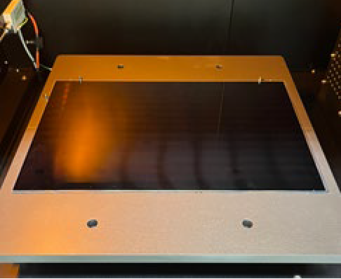

| 雷射拆解面板封裝膠材料 Panel with laser debonding sealant |
| 開發新型面板框膠材料技術的，利用雷射設備，並結合創 新研發含 Benzoimide 分子鏈之框膠材料系統，使得液晶 面板變得可拆解，而分離後的上板 CF、下板 TFT、及液 晶，除了可以回用到原液晶面板製程外，還可使用在如智 慧窗、除霧玻璃、天線等新應用 This project develops a new panel sealant technology, using laser equipment, combined with innovative research of a sealant material system containing benzoimide molecular chains. Thus, the LCD panel can be debonded, and the separated CF glasses, TFT glasses, and liquid crystal, in addition to being reused in the original liquid crystal panel process, can also be used in new applications such as smart windows, defogging glass, and antennas.  |
| 技術洽詢聯絡人：包郁傑 聯絡電話：03-5916868 手機:0919368745 E-mail：YC-Pao@itri.org.tw |